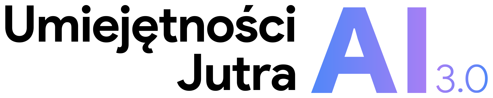
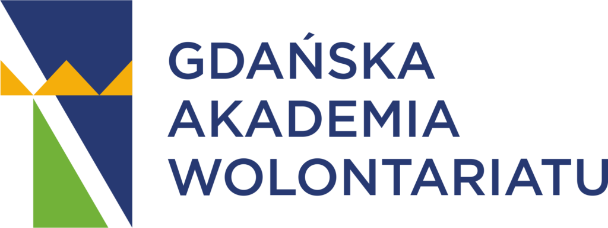
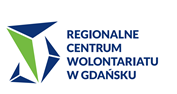
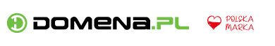

The "Ostatnia Warta" Foundation started its activities on February 25, 2026. From the very beginning, our goal has been to ensure that no one has to pass away alone. The development of our mission, the training of volunteers, and the organization of care would not be possible without the trust and real support of external partners.
Below, we would like to sincerely thank those who believed in our vision right from the start and contributed to building a more dignified world. We operate in a modern and transparent manner, and thanks to the support of global technology leaders, we can focus on providing help while keeping administrative costs to an absolute minimum.









Do you run a business and care about Corporate Social Responsibility (CSR)? Do you want to have a real impact on how care for terminally ill and lonely people looks in our society?
Discover the offer for business